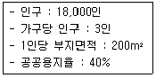
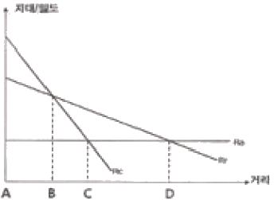
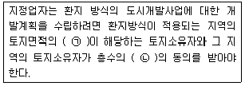
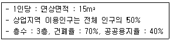
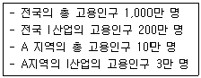
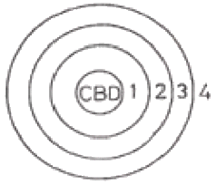
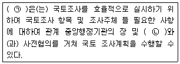
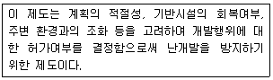

도시계획기사 (2015-09-19 기출문제)
1과목: 도시계획론
1. 개별 필지에 대한 규제사항 및 토지이용계획사항을 확인하는 것으로, 해당 토지에 대한 용도지역ㆍ지구ㆍ구역, 도시ㆍ군계획시설, 도시계획사업과 입안내용, 그리고 각종 규제에 대한 저축 여부 등을 확인할 수 있는 자료는?
- 토지대장
- 건축물대장
- 토지특성조사표
- 토지이용계획확인서
(정답률: 89%)

2. 중세시대 이슬람도시의 특성을 나타내고 있는 도시와 국가의 연결이 틀린 것은?
- 바스라(Basra) - 튀니지
- 라바트(Rabat) - 모로코
- 푸스타트(Fustat) - 이집트
- 코르도바(Cordoba) - 스페인
(정답률: 57%)
3. 도시계획 실행을 위한 중장기 제정계획 수립 시 단계별 순서가 맞는 것은?
- 총괄계획 작성 → 기본방향과 계획지표 설정 → 계획의 여건분석ㆍ예측 → 부문별 투자조정
- 기본방향과 계획지표 설정 → 계획의 여건분석ㆍ예측 → 부문별 투자조정 → 총괄계획 작성
- 계획의 여건분석ㆍ예측 → 부문별 투자조정 → 총괄계획 작성 → 기본방향과 계획지표 설정
- 계획의 여건분석ㆍ예측 → 기본방향과 계획지표 설정 → 총괄계획 작성 → 부문별 투자조정
(정답률: 62%)
4. 새로운 도시계획 패러다임으로 적절하지 않은 것은?
- 도ㆍ농 통합적 계획 지향
- 지속가능한 도시개발 지향
- 성장위주의 경제논리가 지배하는 도시개발 지향
- 시민참여 확대와 계획 및 개발주체의 다양화 지향
(정답률: 95%)
5. 도시계획에 활용되는 자료원에 대한 접근방법을 직접적ㆍ간접적이냐에 따라 1차 자료와 2차 자료로 분류할 때 다음 중 2차 자료에 해당하는 것은?
- 통계조사자료
- 현지조사자료
- 면접조사자료
- 설문조사자료
(정답률: 94%)
6. 다음 중 도시의 일반적인 구성요소가 아닌 것은?
- 문화(culture)
- 시민(citizen)
- 시설(facility)
- 활동(activity)
(정답률: 88%)
7. 다음 중 광장의 종류와 설치목적이 바르게 연결된 것은?
- 근린광장 : 다수인의 집회ㆍ행사ㆍ사교활동 공간 조성
- 역전광장 : 주민의 휴식ㆍ오락 공간 조성 및 경관 환경의 보전
- 교차점광장 : 혼잡한 주요 도로의 교차지점에서 차량과 보행자의 원활한 소통 도모
- 중심대광장 : 교통이 혼잡한 주요시설에 대한 원활한 교통처리
(정답률: 86%)
8. 부동산 소유자간 또는 개발업자와 구입자 사이에 체결되는 민사계약으로 지역제보다 훨씬 상세하고 엄격한 규정으로 되어 있으며, 일반적으로 토지ㆍ건물대장 및 권리서에 기재되어 부동산 매매 시 신규 구입자에게로 승계되는 것으로, 미국의 근대도시계획 성립기에 지역제의 바탕이 된 제도는?
- 협약(covenant)
- 획지분할규제(subdivision control)
- 공도(official mapping)
- 성장관리(growth management)
(정답률: 75%)
9. 다음 중 용도지구의 분류에 해당되지 않는 것은?(관련 규정 개정전 문제로 여기서는 기존 정답인 2번을 누르면 정답 처리됩니다. 자세한 내용은 해설을 참고하세요.)
- 개발진흥지구
- 자연환경보전지구
- 시설보호지구
- 특정용도제한지구
(정답률: 79%)
10. 지구단위계획에서의 환경관리계획에 관한 설명 중 옳지 않은 것은?
- 구릉지 등의 개발에서 절토를 최소화하고 절토면이 드러나지 않게 대지를 조성하여 전체적으로 양호한 경관을 유지시킨다.
- 구릉지에는 가급적 계단형태의 고충건물 위주로 계획한다.
- 대기오염원이 되는 생산활동이 주거지 안에서 일어나지 않도록 한다.
- 쓰레기 수거는 가급적 건물 후면에서 이루어지도록 하고, 폐기물 처리시설을 설치하는 경우에는 바람의 영향을 감안하고 지분을 설치하도록 한다.
(정답률: 93%)
11. 다음 중 존 프리드만(John Friedmann)이 각각의 사상적 배경이 되는 학문적 전통에 따라 분류한 계획이론 중 옳지 않는 것은?
- 사회맥락(Social context)이론
- 사회동원(Social mobilization)이론
- 사회학습(Social learning)이론
- 사회개혁(Social refom)이론
(정답률: 65%)
12. 계획수립 과정을 옮겨 나열한 것은?
- 목표설정→상황의 분석 및 미래의 예측→대안설정 및 평가→집행
- 목표설정→대안설정 및 평가→상황의 분석 및 미래의 예측→집행
- 상황의 분석 및 미래의 예측→목표설정→대안설정 및 평가→집행
- 상황의 분석 및 미래의 예측→대안설정 및 평가→목표설정→집행
(정답률: 79%)
13. 다음 중 우리나라 현재 도시계획의 종류와 위계를 옳게 나열한 것은?
- 광역도시계획-도시군ㆍ기본계획-도시ㆍ군 관리계획-지구단위계획
- 수도권계획-도시ㆍ군 기본계획-도시ㆍ군 관리계획-도시설계
- 도시ㆍ군 기본계획-광역도시계획-도시재정비계획-지구단위계획
- 광역도시계획-수도권정비계획-도시ㆍ군 관리계획-도시ㆍ군기본계획-도시설계
(정답률: 76%)
14. 국토의 계획 및 이용에 관한 법률 시행령에서 기반시설 중 환경기초 시설이 아닌 것은?
- 하수도
- 도축장
- 폐차장
- 폐기물 처리시설
(정답률: 78%)
15. 다음 중 지속가능한 도시가 추구하는 목표가 아닌 것은?
- 쾌적한 도시공간의 정비ㆍ확보
- 환경 친화적 교통ㆍ물류체계 정비
- 환경부하의 저감, 자연과의 공생, 어메니티 창출
- 현재의 건축물을 파손하지 않고 지속적으로 보존
(정답률: 89%)
16. 1980년대 계획된 우리나라 1기 신도시와 비교하여 2000년대에 추진된 제2기 신도시의 계획 특성이 아닌 것은?
- 대중교통 지향적인 교통체계를 갖추었다.
- 녹지율을 높여 그린네트워크를 지향하였다.
- 친환경, 첨단과 같은 신도시로서의 테마를 강조하였다.
- 1기 신도시에 비해 토지이용에 있어 고밀도를 유지하였다.
(정답률: 84%)
17. 가장 인간주의적이고 문화적 폭이 넓은 계획을 주장한 미국지역 계획가협외에 속한 학자들의 도시계획 내용으로 옳지 않은 것은?
- 도시구조 형식은 근린주구의 개념을 강조
- 소단위의 새로운 주거형태의 개발을 강조
- 자연에의 희귀를 주장하며 농업과 공업의 조화를 강조
- 행정조직의 집중화를 주장하며 전원도시운동의 이념을 강조
(정답률: 51%)
18. 공원 및 녹지에 관한 설명 중 옳은 것은?
- 녹지의 종류는 완충녹지, 경관녹지, 시설녹지로 구분된다.
- 수변공원은 3만m2이상의 규모에서만 지정이 가능하다.
- 도시공원 및 녹지 등에 관한 법률에 의해 도시ㆍ군 관리계획으로 결정된다.
- 녹지는 자연경관을 보전하거나 개선하고, 공해와 재해를 방지하여 양호한 도시경관의 향상을 도모하기 위해 설치ㆍ관리되는 도시기반 시설이다.
(정답률: 73%)
19. 인구50~100만 인의 중도시에서 상업지역의 간선도로 밀도로 가장 적절한 것은?
- 2~4km/km2
- 3~6km/km2
- 4~8km/km2
- 5~10km/km2
(정답률: 67%)
20. 다음의 조건에 따라 필요한 주거지역의 면적은 얼마인가?

- 1,000,000m2
- 1,800,000m2
- 2,000,000m2
- 3,000,000m2
(정답률: 62%)
2과목: 도시설계 및 단지계획
21. 생활권의 권역구분 중 2차 생활권(중생활권)의 특징으로 가장 옳은 것은?
- 주거환경의 보호가 최우선이다.
- 주거, 상업뿐만 아니라 생산시설도 입지한다.
- 지역중심이 있고, 2~3가지의 토지용도가 있다.
- 교통수단을 이용하지 않고 걸어서 움직일 수 있는 공간적 범위를 의미한다.
(정답률: 75%)
22. 도시 및 단지설계에서 조망경관을 고려한 도시공간형성과 가장 거리가 먼 내용은?
- 조망대상 주변지역의 일정한 건축률 높이 제한
- 전체 조망구도를 고려한 용도지역 및 지구 설정
- 주요 조망점 주변 지역의 시야 확보를 위한 넉넉한 공지 확보
- 랜드마크경관을 확보하기 위한 초고층 건축물의 건설 의무화
(정답률: 90%)
23. 2m의 등고선 간격(표고차, H)으로 5%의 경사도를 얻으려면 등고선과 등고선간의 거리는 얼마가 되어야 하는가?
- 20m
- 30m
- 40m
- 50m
(정답률: 77%)
24. 물리적 계획 및 적정인구 규모뿐만 아니라 도시의 경제기반 확보, 개발이익의 사회 환수, 토지의 공유와 사용권 제한 등 유지관리 내용을 포함한 계획은?
- 르도(C.N. Nedoux)의 쇼우(Chaux)
- 하워드(Ebenezer Howard)의 전원도시
- 쿡(P.Cook)의 플러그인 시티(Plug-in-City)
- 르꼬르뷔지에(Le Corbuser)
(정답률: 79%)
25. 단지계획의 수립과정 중 기본구상 및 대안설정 단계에서 수행되는 계획내용은 무엇인가?
- 기본골격작성
- 분양계획
- 부문별 기본계획
- 자연ㆍ인문환경분석
(정답률: 65%)
26. 대단위 주택단지 계획의 장점으로 옳은 것은?
- 공공시설 비용을 넓게 확산시키기 때문에 기반시설 설치에 있어 비용이 절감된다.
- 상업시설이 단지의 중앙에 위치하여 시설의 이용이 편리하고 간선도로변 활성화 기회가 촉진된다.
- 표준주택형의 사용 등 표준화된 계획에 따라 단기간에 건설되므로 다양한 주거 환경을 조성하게 된다.
- 주변 도시조직과의 부정합성 및 이웃 가구와의 유기적 연계성이 강화되어 단지 전체의 지역적 위계가 분명하게 건설된다.
(정답률: 48%)
27. 지구단위계획의 특별계획구역에 대한 설명으로 틀린 것은?
- 특별계획구역에 대한 계획내용은 지구단위 계획에 포함하여 결정한다.
- 지구단위계획 입안 시, 현상설계 등에 의하여 창의적 개발안을 받아들일 필요가 있을 경우 특별계획구역으로 반영하여 함께 지정한다.
- 도시ㆍ군관리계획으로 결정하는 데 있어 법령에서 지구단위계획으로 결정하도록 한 부분이 있는 경우에는 이들 모두를 도시ㆍ군관리 계획으로 결정하여야 한다.
- 지구단위계획구역 중에서 계획의 수립 및 실현에 상당한 기간이 걸릴 것으로 예상되어 별도의 개발안이 필요한 경우에는 특별계획구역으로 지정할 수 없다.
(정답률: 78%)
28. 1875년 영국에서 불결한 도시주거환경을 제거하기 위해 새로이 건설되는 주택의 상하수도 시설과 정원크기 및 주변 도로의 폭 등 주거환경기준을 규제하는 목적으로 제정된 법은?
- 건축법(building code)
- 단지조성법(site planning act)
- 공중위생법(pubic health act)
- 미관지구에 관한 법(law of beautification district)
(정답률: 80%)
29. 전원도시 레치워스(Letchworth) 건설을 담당한 사람은?
- Tony Gamier, Auguste perret
- Raymond Unwin, Barry Parker
- Le Corbusier, Ebenezer Howard
- Peter Smithson, Alison Smithson
(정답률: 75%)
30. 다음 중 경관분석 기법에 해당하지 않는 것은?
- 기호화 방법
- 군락측도 방법
- 시각회랑에 의한 방법
- 게슈탈트(Gestalt)에 의한 방법
(정답률: 75%)
31. 주택건설기준 등에 관한 규정상 도로 및 주차장의 경계선으로부터 공동주택의 외벽까지는 최소 얼마 이상을 띄워야 하는가?
- 2m
- 3m
- 5m
- 10m
(정답률: 82%)
32. 기능별 구분에 의한 도로의 종류로서 보조간선도로와 집산도로의 배치간격의 기준은?
- 120~150m 내외
- 250m 내외
- 500m 내외
- 1000m 내외
(정답률: 89%)
33. 다음 중 페리(Perry)가 주장한 근린주구이론에서 하나의 근린단위가 갖고 있어야 하는 기본요소에 해당하지 않는 것은?
- 작은 공원
- 운동장
- 작은 가게
- 완충녹지
(정답률: 68%)
34. 도시ㆍ군계획시설의 결정ㆍ구조 및 설치기준에 관한 규칙에 의한 보행자 전용도로의 최소 폭은?
- 1.0m
- 1.5m
- 2.0m
- 2.5m
(정답률: 78%)
35. 지구단위계획의 성격으로 가장 거리가 먼 것은?
- 지구단위계획 수립의 주된 목적은 도시경관 관리를 위함이다.
- 지구단위계획구역 및 지구단위계획은 도시ㆍ군관리계획으로 결정한다.
- 지구단위계획은 인간과 자연이 공존하는 환경친화적 환경을 조성하고 지속가능한 개발 또는 관리가 가능하도록 하기 위한 계획이다.
- 지구단위계획은 토지이용을 합리화하고 그 기능을 증진시키며 미관을 개선하고 체계적이고 계획적으로 관리하기 위해 수립하는 계획을 말한다.
(정답률: 78%)
36. 도시ㆍ군계획시설의 결정ㆍ구조 및 설치기준에서 폭 35m 도로는 다음 중 어느 규모별 구분에 해당하는가?
- 대로 1류
- 대로 2류
- 중로 1류
- 광로 3류
(정답률: 64%)
37. 다음 중 건축법령상 공동주택의 구분에 따른 분류가 옳지 않은 것은?
- 주택으로 쓰는 층수가 6개 층인 주택은 아파트다.
- 주택으로 쓰는 층수가 8층인 주택은 아파트다.
- 주택으로 쓰는 1개의 동의 바닥면적 합계(지하주차장 면적 제외)가 450m2인 3층의 주택은 다세대주택이다.
- 주택으로 쓰는 1개 동의 바닥면적 합계(지하주차장 면적 제외)가 660m2인 5층의 주택은 연립주택이다.
(정답률: 62%)
38. 국지도로의 형태 중 하나인 루프형(Loop) 도로에 대한 설명으로 옳지 않은 것은?
- 불필요한 차량의 진입이 배제된다.
- 교차점이 많아 방향성이 불분명하다.
- 주거환경의 안정성이 어느정도 확보된다.
- 외곽부에서 내부로의 진입이 제한되므로 차량의 우회교통이 발생한다.
(정답률: 87%)
39. 건물로 사방이 폐쇠된 공간내에 서 있는 관찰자 자신으로부터 건물까지의 거리가 건물높이(H)의 몇 배를 초과하면서부터 건물에 의해 폐쇄되었던 느낌에서 벗어날 수 있는가?
- 2H
- 3H
- 4H
- 5H
(정답률: 58%)
40. 도시공원의 기능에 따른 분류 중 생활권공원의 하나인 어린이공원의 최소 설치 규모 기준은?
- 3,000m2 이상
- 2,000m2 이상
- 1,500m2 이상
- 1,000m2 이상
(정답률: 89%)
3과목: 도시개발론
41. 마케팅 전략의 3단계인 STP전략 중 새로운 제품에 대해 다양한 욕구, 행동, 특성을 가진 소비자들을 동질적인 집단으로 나누는 것은?
- 시장 세분화
- 표적시장 선점
- 전략적 판촉
- 제품 포지셔닝
(정답률: 84%)
42. 지역사회개발(Community development)의 주요 목적으로 가장 거리가 먼 것은?
- 경제성장의 촉진
- 특정 상업기능의 유지 또는 개선
- 시설별 효율성 향상을 위한 용도 분리
- 공원, 여가시설, 주차시설, 가로패턴 등 물리적시설 개선
(정답률: 53%)
43. 제안된 도시개발 사업안들 중에서 최적의 사업안을 선택하는 일은 제안된 사업의 기대비용과 이익 뿐만 아니라 사업의 실행결과에 따른 형평성 문제를 어떻게 다룰 것인가에 직접적인 영향을 받는다. 이러한 이유에서 계획가가 제안된 사업안에 대한 평가방법의 선정에서 고려해야 하는 요소와 가장 거리가 먼 것은?
- 결과의 효율성
- 목적의 적절성
- 실행의 타당성
- 지역주민의 수용성
(정답률: 57%)
44. 환지방식에 의한 도시개발사업의 시행에 있어, 도시개발사업으로 인하여 발생하는 사업비용을 충당하기 위하여 사업시행자가 취득하여 집행 또는 매각하는 토지를 무엇이라 하는가?
- 비환지
- 체비지
- 공유지
- 공공공지
(정답률: 86%)
45. 1987년 Brundtlang 보고서에서 “미래 세대의 욕구나 복지를 충족시킬 수 있는 능력과 여건을 저해하지 않으면서 현세대의 욕구를 충족시키는 개발”이라는 지속가능한 개발개념을 잉태했다. 이는 다양한 변화의 압력에 대응해 나가는 지속적인 동태적 과정으로 1997년 Robert Goodland는 세 가지 지속성의 요소를 제안하고 있는데 이에 해당하지 않는 것은?
- 사회적 지속성
- 경제적 지속성
- 환경적 지속성
- 물리적 지속성
(정답률: 55%)
46. 다음 중 Calthorpe의 대중교통중심개발(Translt Orlentd Development, TOD)의 원칙으로 옳지 않은 것은?
- 주택의 유형, 밀도의 혼합배치
- 자동차 중심의 중ㆍ저밀도 유지
- 지구 내 목적지간 보행친화적 가로망 구축
- 역으로부터 보행거리 내에 주거, 상업, 직장, 공원, 공공시설 설치
(정답률: 85%)
47. 그림과 같은 거리와 지대/밀도의 관계 그래프에서 도시용 토지와 농업 등의 생산용도로 이용하고자 하는 토지로 나누어지는 지점은? (단, Ra는 농업지대곡선, Rr는 주거지대곡선, Rc는 상업ㆍ업무 지대곡선이다.)

- A
- B
- C
- D
(정답률: 62%)
48. 다음 중 Miles, Berens and Weiss(2000)의 정의를 바탕으로 하는 도시개발에서의 타당성 분석에 포함되는 개념으로 옳지 않은 것은?
- 타당성 분석은 선택된 수단의 적합성을 실험하는 것이다.
- 타당성은 그 프로젝트의 확실한 성공을 보장하지는 않는다.
- 타당성은 분석 이전에 설정된 프로젝트의 명료한 목적에 대한 충족 여부에 따라 결정된다.
- 타당성 분석이란 제약사항이 없는 상태에서 프로젝트의 적합성을 실험하는 것이다.
(정답률: 80%)
49. 다음 중 도시마케팅의 고객이 아닌 것은?
- 주민
- 지방자치단체
- 투자기업
- 관광객 및 방문객
(정답률: 77%)
50. 교외화로 인한 스프롤(sprawl) 현상을 치유하기 위해 시작된 것으로 기 개발된 지역 안에서 신규주택 건설과 상업적 개발을 지역 안에서 신규주택 건설과 상업적 개발을 강조함으로써 새로운 도로와 시설, 어메니티에 드는 공공투자와 신개발로 인해 발생하는 사회적 비용을 줄여보자는 취지의 도시운동은?
- 에코이즘
- 뉴어바니즘
- 스마트성장
- 어반빌리지
(정답률: 37%)
51. 다음 중 주민 참여형 도시개발의 유형과 가장 거리가 먼 것은?
- BTL방식
- 민간협약
- 주민투표
- 지구차원의 계획
(정답률: 75%)
52. 영국의 근대도시화 과정에서 표출된 문제에 대하여 1899년에 전원도시 건설의 필요성을 강조한 사람은?
- 오웬
- 어윈
- 하워드
- 테일러
(정답률: 79%)
53. 도시재정비 촉진을 위한 특별법에서 재정비촉진계약과 관련한 완화조항이 아닌 것은?
- 재정비촉진계획에서 건축물의 건축제한
- 재정비촉진계획 조례에서 정한 건폐율 상한
- 재정비촉진계획에 따라 조성하는 근린공원의 조성면적
- 재정비촉진계획에 따라 건축하는 건축물에 부과하는 과밀부담금
(정답률: 44%)
54. 도시ㆍ주거환경정비기본계획을 수립하고자 하는 때에는 며칠 이상 주민에게 공람하여야 하는가?
- 14일
- 15일
- 20일
- 21일
(정답률: 73%)
55. 도시기반시설이나 공공시설은 재화나 서비스의 소비자가 증가하여도 이에 따른 추가적인 공급비용이 발생하지 않는 특징이 있다. 이를 의미하는 공공재의 특성을 무엇이라 하는가?
- 비중감성
- 무비용성
- 비배재성
- 비경합성
(정답률: 72%)
56. 다음 중 ㉠, ㉡에 들어갈 내용이 모두 옳은 것은?

- ㉠ 3분의 2이상 ㉡3분의 2이상
- ㉠ 3분의 2이상 ㉡2분의 1이상
- ㉠ 2분의 1이상 ㉡2분의 1이상
- ㉠ 2분의 1이상 ㉡3분의 2이상
(정답률: 80%)
57. 도시개발 경제성 분석의 5단계를 바르게 나열한 것은?
- 자료 수집→정책 정의→분석체계 수립→분석 실시→선택 및 결정
- 정책 정의→자료 수집→분석체계 수립→분석 실시→선택 및 결정
- 자료수집→분석체계 수립→정책 정의→분석 실시→선택 및 결정
- 정책정의→분석체계 수립→자료 수집→분석 실시→선택 및 결정
(정답률: 31%)
58. 바다, 하천, 호수 등의 공간을 가지는 육지에 인공적으로 개발된 공간을 무엇이라 하는가?
- 역세권
- 지하공간
- 텔레포트
- 워터프론트
(정답률: 89%)
59. 인구가 10만 명인 도시에서 다음 조건에 맞게 상업용지의 면적을 산출하면 약 얼마인가?

- 21.4ha
- 35.7ha
- 59.5ha
- 262.5ha
(정답률: 71%)
60. 델파이법에 관한 설명으로 옳지 않은 것은?
- 조사하고자 하는 특정사항에 대해 일반인 집단을 대상으로 반복 앙케이트를 행하여 의견을 수집하는 방법이다.
- 예측을 하는 데 회의방식보다 서면을 통한 설문방식이 올바른 결론에 도달할 가능성이 높다는 가정에 근거한다.
- 예측과제의 추출처리→조사표 설계→조사대상자 선정→조사 실시→조사결과의 집계와 분석과정을 거친다.
- 최초의 앙케이트를 반복 수렴한다는 데에서 여러 사람의 판단이 피드백 되기에 결론을 의미 있게 받아들일 수 있다.
(정답률: 65%)
4과목: 국토 및 지역계획
61. 다음의 대도시성장관리정책에 대한 설명으로 틀린 것은?
- 종주도시권의 다핵개발은 자유방임정책보다 오히려 대도시권으로의 인구와 산업의 집중을 유발한다.
- 반자력중심도시의 육성은 대도시의 통근권 밖인 60~160km 떨어진 도시를 육성하는 정책이다.
- 대도시 집중억제의 한 수단으로서 소규모 서비스 중심지 및 농촌의 개발은 소요투자의 효율성에 문제가 있다.
- 대도시의 관리정책으로서 지역중심도시와 하위체계 개발시책은 투자쟈원의 한계성 때문에 모든 지역을 동시에 개발할 수 없다.
(정답률: 58%)
62. 수도권으로의 인구집중, 수도권의 과밀ㆍ과대화를 억제하기 위한 방법으로 옳지 않은 것은?
- 고등 교육기관의 증설
- 수도권 소재 공공기관의 이전
- 수도권 내 공장의 신ㆍ증설 억제
- 수도권 외 지역의 거점 도시 육성
(정답률: 78%)
63. 수출기반이론에 대한 설명으로 옳지 않은 것은?
- 수출은 재화의 형태만을 갖는다.
- 한 지역의 지역경제를 수출부문과 지원부문으로 구분한다.
- 도시, 지역, 국가에 이르기까지 다양한 공간적 범역에 적용이 가능하다.
- 기반사업과 비기반사업은 일정한 관계를 갖고 연쇄적으로 지역경제 성장에 영향을 준다.
(정답률: 64%)
64. 부드빌(S. Boudeville)의 지역분류에 속하지 않는 것은?
- 계획지역(Planning region)
- 분극지역(Polanized region)
- 경계지역(Economic region)
- 동질지역(Homogeneous region)
(정답률: 70%)
65. 입지상은 어떤 지역의 산업이 전국의 동일 산업에 대한 상대적인 중요도를 측정하는 방법으로서, 그 지역산업의 상대적인 특화정도를 나타낸 계수이다. [보기]의 경우 지역산업의 입지계수는 얼마인가?

- 1
- 1.5
- 2
- 2.5
(정답률: 83%)
66. 변이할당(shift-share) 분석에 관한 설명으로 옳지 않은 것은?
- 산업상호간의 연관성을 파악할 수 있다.
- 두 시점에선의 자료만 확보되면 동타적인 분석이 가능하다.
- 지역의 횡적인 산업구조와 종적인(시차적인)구조변화를 동시에 살펴볼 수 있다.
- 산업구조와 지역경제성장간의 관계를 분석할 수 있다.
(정답률: 37%)
67. 동일한 중심결절과 관계를 가지고 있는 주변지역을 하나의 지역으로 통합했다면 지역확정의 원칙 중 어떤 원칙에 따른 것인가?
- 순위규모 법칙
- 동질성의 원칙
- 기능결합의 원칙
- 계획성의 원칙
(정답률: 63%)
68. 다음 중 제2차 국토종합계발계획(1982-1991)의 생활권 구분에서 농촌도시 생활권에 해당하지 않는 것은?
- 영월생활권
- 서산생활권
- 정촌생활권
- 강화생활권
(정답률: 55%)
69. 다음 중 인구와 각종 기능이 집중함으로 인해 수도권에 발생할 수 있는 문제점에 해당하지 않는 것은?
- 교통난 심화
- 주택가격의 급등
- 환경 문제의 심화
- 지방자치제의 퇴보
(정답률: 88%)
70. 성장거점이론의 기초를 최초로 정립한 학자는?
- 페로우(Perroux)
- 미르달(Gunner Myrdal)
- 프리드만(John Fridmann)
- 허쉬만(Albert O. Hirschman)
(정답률: 65%)
71. 독일의 발터 크리스탈러(Walter Christaller)가 주장한 공간이론으로서 3차 산업의 입지원리를 설명하는 이론은?
- 동심원이론
- 선형이론
- 중심지이론
- 다핵구조론
(정답률: 73%)
72. 모든 유형의 개발계획 활동에 있어서 지속가능한개발(Sustainable Development)이 중요한 기저가 되고 있다. 이 개념을 설명한 내용으로 옳지 않은 것은?
- 환경오염 규제만을 강화하는 개발 방법
- 지구의 환경용량 내에서 삶의 질을 향상시키는 개발
- 미래세대 수요충족을 저해하지 않으면서 현 세대의 수요충족을 보장하는 개발
- 자연과 사회체계의 생명력을 보호하면서 기초적인 모든 서비스를 모든 공동체 주민에서 제공 하는 것
(정답률: 82%)
73. 지역계획 수립과정에서 대안평가 또는 사업의 경제적 타당성을 평가할 때 비용-편익분석법(Cost-benefit analysis)을 사용할 경우, 타당성을 판단하는 방법에 대한 설명으로 틀린 것은?
- B/C Ratio가 1보다 커야 한다.
- 항상 B/C Ratio가 높은 사업이 채택된다.
- 순현재가치(NPV)가 높은 대안은 항상 순미래가치(NFV)도 높다.
- 편익의 현재가치 합(合)에서 비용의 현재가치 합(合)을 뺀 순현재가치(Net present value)가 0이상이 되어야 타당하다.
(정답률: 52%)
74. 다음 중 로렌츠(Lorenz)곡선을 이용한 지역소득격차 측정방법은?
- 평균 편차
- 표준 편차
- 지니 계수
- 변이 계수
(정답률: 63%)
75. 총 고용이 50만 명인 지역의 경제기반승수가 2라면, 기반활동 고용이 1만 명 증가할 때 총 고용은 어떻게 변하는가?
- 51만 명으로 증가
- 52만 명으로 증가
- 53만 명으로 증가
- 54만 명으로 증가
(정답률: 69%)
76. 다음 중 웨버(A. Weber)의 공업입지이론에서 입지를 결정하는 인자에 해당하지 않는 것은?
- 수송비
- 집적경제
- 노동비
- 제품수요
(정답률: 71%)
77. 다음 중 우리나라 현행 수도권정비계획에서 지정된 관리권역이 아닌 것은?
- 자연보전권역
- 과밀억제권역
- 성장관리권역
- 개발유보권역
(정답률: 69%)
78. 버제스(Burgess)의 동심원 구조에서 근로자 주택지대에 해당하는 곳은?

- 1
- 2
- 3
- 4
(정답률: 62%)
79. 지역간 소득격차는 국가경제의 성장단계에 따라 역U자형 곡선을 보이게 된다고 주장한 사람은?
- Hirchmannn
- Myrdal
- Williamson
- Friedman
(정답률: 62%)
80. 다음 중 권역을 설정하는 데 가장 유용한 통계적 기법은?
- 로짓모형(Loogit Model)
- 군집모형(Cluster Analysis)
- 회귀분석(Regression Analysis)
- 분산분석(Analysis of Variance)
(정답률: 73%)
5과목: 도시계획관계법규
81. 택지개발촉진법에 따라 지정권자의 권한의 일부를 위임할 수 있는 대상으로 옳은 것은?
- 기획재정부 장관
- 행정자치부 장관
- 한국토지주택공사장
- 국토교통부 지방국토관리청장
(정답률: 71%)
82. 수도권정비계획법령에 따른 총량규제의 내용으로 틀린 것은?
- 총량구제의 대상이 되는 시설로는 학교ㆍ공공청사ㆍ연수 시설 등이 있다.
- 대학 및 교육기관의 입학 정원의 증가 층수는 국토교통부장관이 수도권정비위원회의 심의를 거쳐 정한다.
- 국토교통부장관은 인구집중유발시설이 수도권에 과도하게 집중하지 않도록 그 신설ㆍ증설의 총 허용량을 제한할 수 있다.
- 국토교통부장관은 5년마다 수도권정비위원회의 심의를 거쳐 시ㆍ도별 공장건축의 총 허용량을 결정하여 관보에 고시하여야 한다.
(정답률: 42%)
83. 수도권정비계획법령 상 자연보전권역에서의 행위제한에 해당하는 개발사업의 최소 규모 기준으로 옳은 것은?
- 면적이 3만m2 이상인 도시개발사업
- 면적이 2만m2 이상인 도시개발사업
- 면적이 4만m2 이상인 공업용지조성사업
- 시설계획지구의 면적이 2만m2 이상인 관광지조성사업
(정답률: 63%)
84. 국토의 계획 및 이용에 관한 법률상 도시ㆍ군계획시설 사업의 시행자가 도시ㆍ군계획시설에 관한 조사를 위해 타인의 토지에 출입하고자 할 때에는 특별시장ㆍ광역시장ㆍ특별자치시장ㆍ특별자치도지사ㆍ시장 또는 군수의 허가를 받아야 하는데 출입하고자 하는 날의 며칠 전까지 그 토지의 소유자ㆍ점유자 또는 관리인에게 그 일시와 장소를 통지하여야 하는가? (단, 도시계획시설사업의 시행자가 행정청인 경우는 제외한다.)
- 3일
- 5일
- 7일
- 14일
(정답률: 57%)
85. 국토의 계획 및 이용에 관한 법령에 따른 공업지역의 분류에 해당되지 않는 것은?
- 준공업지역
- 근린공업지역
- 전용공업지역
- 일반공업지역
(정답률: 74%)
86. 다음 중 국토의 계획 및 이용에 관한 법률에 의한 지구단위계획 수립 시 고려사항이 아닌 것은?
- 중심 기능
- 용도지역 특성
- 지정 목적
- 건축물 실내 설계
(정답률: 89%)
87. 국토의 계획 및 이용에 관한 법률에 따른 도시ㆍ군 기본계획의 내용에 포함되지 않는 것은?
- 토지의 이용 및 개발에 관한 사항
- 지역적 특성 및 계획의 방향ㆍ목표에 관한 사항
- 건축물의 배치ㆍ형태ㆍ색채 또는 건축선에 관한 계획
- 공간구조, 생활권의 설정 및 인구의 배분에 관한 사항
(정답률: 68%)
88. 다음 중 도시공원의 점용허가 대상에 해당하지 않는 것은?
- 전주, 전선, 변전소의 설치
- 공원의 자연경관을 훼손하지 않는 전원주택의 신축
- 도로, 교량, 철도 및 궤도, 노외주차장, 선착장의 설치
- 도시공원의 설치에 관한 도시ㆍ군관리계획 결정당시 기존 건축물 및 기존 공작물의 증축ㆍ개축ㆍ재축 또는 대수선
(정답률: 56%)
89. 하나의 도시지역 안에 있어서 도시공원의 확보기준은 해당도시지역안에 거주하는 주민 1인당 얼마 이상으로 하는가?
- 6m2
- 7m2
- 8m2
- 9m2
(정답률: 79%)
90. 다음 국토조사에 관한 설명 중 빈 칸에 들어갈 용어가 바르게 나열된 것은?

- ㉠ : 국토교통부장관 ㉡ : 시ㆍ도지사
- ㉠ : 국토교통부장관 ㉡ : 국토정책위원회
- ㉠ : 국토정책위원회 ㉡ : 시ㆍ도지사
- ㉠ : 국토정책위원회 ㉡ : 국토교통부장관
(정답률: 58%)
91. 시가화조정구역의 지정에 관한 설명으로 옳지 않은 것은?
- 시가화를 유보할 수 있는 기간은 5년 이상 20년 이내이다.
- 시가화조정구역의 지정에 관한 도시ㆍ군관리계획의 결정은 시가화 유보기간이 만료된 날로부터 효력을 상실한다.
- 시가화조정구역의 실효고시는 실효일자 및 실효사유와 실효된 도시ㆍ군관리계획의 내용을 관보 또는 공보에 게재하는 방법에 의한다.
- 국가계획과 연계하여 시가화조정구역의 지정 또는 변경이 필요한 경우에는 국토교통부장관이 직접 시가화주정구역의 지정 또는 변경을 도시ㆍ군관리계획으로 결정할 수 있다.
(정답률: 67%)
92. 국토의 계획 및 이용에 관한 법률에 따른 광역도시계획의 내용으로 옳지 않은 것은?
- 경관계획에 관한 사항
- 광역시설의 배치ㆍ규모ㆍ설치에 관한 사항
- 광역계획권의 예산확보 방안에 관한 사항
- 광역계획권의 녹지관리체계와 환경보전에 관한 사항
(정답률: 74%)
93. 다음에서 설명하고 있는 제도는?

- 토지거래제한
- 개발행위허가제
- 개발밀도관리제
- 개발제한구역제
(정답률: 68%)
94. 주차장법에 의한 용어의 정의로 옳지 않은 것은?
- 기계식주차장이란 기계식 주차장치를 설치한 노상주차장과 노외주차장을 말한다.
- 노외주차장이란 도로의 노면 및 교통광장 외의 장소에 설치된 주차장으로서 일반의 이용에 제공되는 것을 말한다.
- 노상주차장이란 도로의 노면 또는 교통광장의 일전한 구역에 설치된 주차장으로서 일반의 이용에 제공되는 것을 말한다.
- 부설주차장이란 관련 규정에 의하여 건축물, 골프연습장, 그 밖에 주차수요를 유발하는 시설에 부대하여 설치된 주차장으로서 해당 건축물ㆍ시설의 이용자 또는 일반의 이용에 제공되는 것을 말한다.
(정답률: 72%)
95. 개발제한구역으로 지정하는 대상지역 기준으로 옳지 않은 것은?
- 도시의 정체성 확보 및 적정한 성장관리를 위하여 개발을 제한할 필요가 있는 지역
- 주민이 집단적으로 거주하는 취락으로서 주거환경의 개선 및 취락정비가 필요한 지역
- 도시가 무질서하게 확산되는 것 또는 서로 인접한 도시가 시가지로 연결되는 것을 방지하기 위하여 개발을 제한할 필요가 있는 지역
- 도시주변의 자연환경 및 생태계를 보전하고 도시민의 건전한 생활환경을 확보하기 위하여 개발을 제한할 필요가 있는 지역
(정답률: 78%)
96. 국토의 계획 및 이용에 관한 법률에서 정하고 있는 국토의 용도구분에 관한 설명 중 옳지 않은 것은?
- 도시지역 : 인구와 산업이 밀집되어 있거나 밀집이 예상되어 그 지역에 대하여 체계적인 개발ㆍ정비ㆍ관리ㆍ보전 등이 필요한 지역
- 관리지역 : 도시지역의 인구와 산업을 수용하기 위하여 도시지역에 준하여 체계적으로 관리하거나 농림업의 진흥, 자연환경 또는 산림의 보전을 위하여 관리할 필요가 있는 지역
- 농림지역 : 도시지역에 속하지 아니하는 농지법에 의한 농업 진흥지역 또는 산지관리법에 의한 보전산지 등으로서 장래의 시가화를 위해 개발을 유보하고 있는 지역
- 자연환경보전지역 : 자연환경ㆍ수자원ㆍ해양ㆍ생태계ㆍ상수원 및 문호재의 보전과 수산자원의 보호ㆍ육성을 위하여 필요한 지역
(정답률: 64%)
97. 다음 중 “국민주택규모”라 함은 1호 1세대당 전용주거면적이 얼마 이하인 경우는 뜻하는가? (단, 수도권을 제외한 도시지역이 아닌 읍 또는 면 지역의 경우는 고려하지 않는다.)
- 60m2
- 66m2
- 85m2
- 100m2
(정답률: 80%)
98. 도시ㆍ주거환경정비기본계획에 관한 설명으로 옳지 않은 것은?
- 도시ㆍ주거환경정비기본계획은 20년 단위로 수립하여야 한다.
- 도시ㆍ주거환경정비기본계획은 작성기준 및 작성방법은 국토교통부장관이 이를 정한다.
- 도시ㆍ주거환경정비기본계획에 대하여 5년마다 타당성 여부를 검토하여 그 결과를 도시ㆍ주거환경정비기본계획에 반영하여야 한다.
- 대도시가 아닌 경우 도지사가 도시ㆍ주거환경정비기본계획의 수립이 필요하다고 인정하는 시를 제외하고 도시ㆍ주거환경정비기본계획을 수립하지 아니할 수 있다.
(정답률: 63%)
99. 다음 중 시ㆍ군내의 주요시설물 또는 환경의 보호, 경관의 유지, 재해대책, 보행자의 통행과 주민의 일시적 휴식공간의 확보를 위하여 설치하는 도시ㆍ군계획시설은?
- 유원지
- 공공공지
- 공개공지
- 쌈지공원
(정답률: 55%)
100. 도시ㆍ군계획시설의 결정ㆍ구조 및 설치기준에 관한 규칙에 대한 설명으로 틀린 것은?
- 주차장이라 함은 주차장법 규정에 의한 노외주차장과 노상주차장을 말한다.
- 유원지의 규모는 1만제곱미터 이상으로 당해 유원지의 성격과 기능에 따라 적정하게 한다.
- 운동장이랗 함은 국민의 건강증진과 여가선용에 기여하기 위하여 설치하는 종합운동장으로써 관람석 수 1천석 이하의 소규모 실내운동장을 제외한다.
- 광장의 결정기준에 따른 분류에는 교통광장, 일반광장, 경관광장, 지하광장, 건축물부설광장이 있다.
(정답률: 66%)